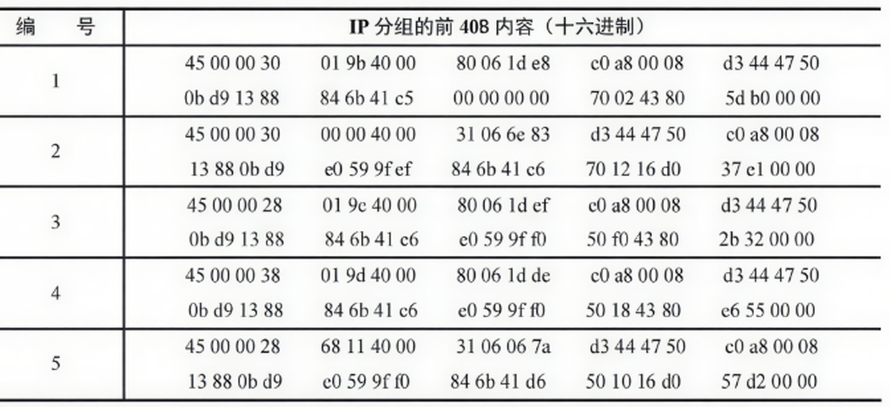
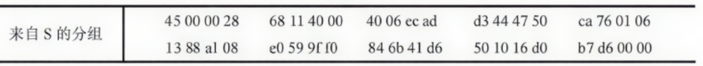
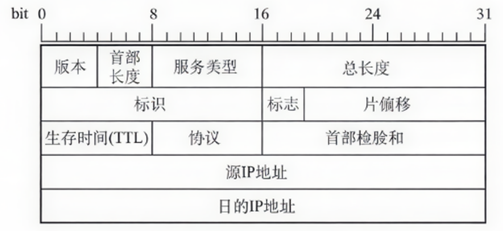
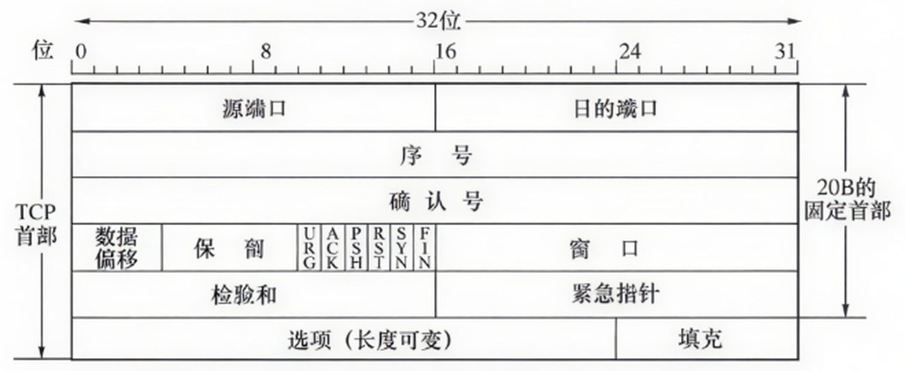
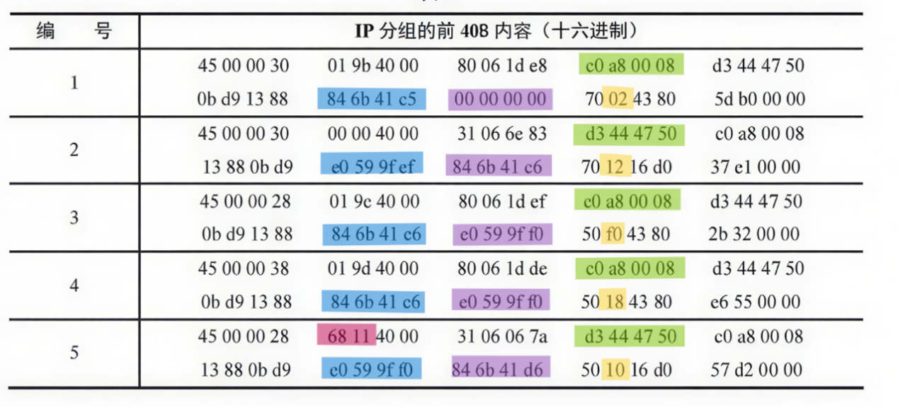
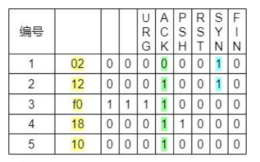
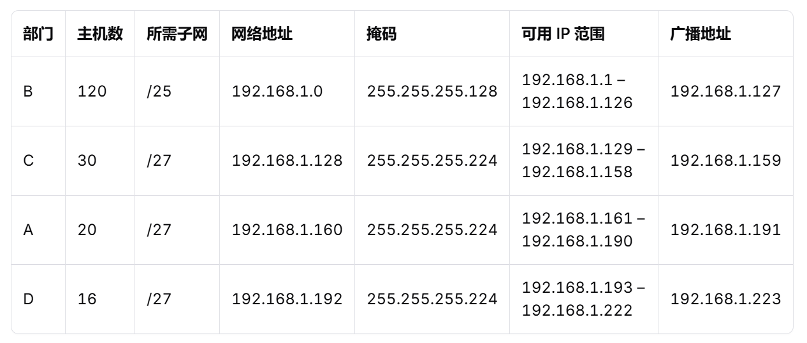

第 5 章 作业 · 运输层
题目 1IP 分组与 TCP 段的首部字段分析
题目
主机 H 通过快速以太网连接 Internet，IP 地址为 192.168.0.8，服务器 S 的 IP 地址为 211.68.71.80。H 与 S 使用 TCP 通信时，在 H 上捕获的其中 5 个 IP 分组如表 1 所示。

回答下列问题：
- 表 1 中的 IP 分组中，哪几个是由 H 发送的？哪几个完成了 TCP 连接建立过程？哪几个在通过快速以太网传输时进行了填充？
- 根据表 1 中的 IP 分组，分析 S 已经收到应用层数据字节数是多少。
- 若表 1 中的某个 IP 分组在 S 发出时的前 40B 如表 2 所示，则该 IP 分组到达 H 时经过了多少个路由器？

IP 分组头和 TCP 段头结构分别如图 1 和图 2 所示。


参考答案
（1）的第 1 问：表 1 中的 IP 分组中，哪几个是由 H 发送的？
因为 IP 分组的首部固定部分有 20 字节，TCP 的段首部固定部分也是 20 字节，所以表 1 中每个编号的第一行为 IP 数据报首部，第二行为 TCP 段首部。
并且根据图 1 IP 分组头结构可知，下图中绿色背景部分为源 IP 地址。

编号 1、3、4 的分组源 IP 地址为 c0 a8 00 08，编号 2、5 的分组源 IP 地址为 d3 44 47 50。
主机 H 的 IP 地址为 192.168.0.8，转换成十六进制形式为 c0 a8 00 08，所以表 1 中的 IP 分组中，编号为 1、3、4 的分组是由 H 发送的。
（1）的第 2 问：哪几个完成了 TCP 连接建立过程？
从图 1 和图 2 可知，黄色背景部分的后 6 位为控制位，分别对应 URG、ACK、PSH、RST、SYN、FIN，如下图所示。

编号为 1 的分组中，SYN=1、ACK=0、seq=84 6b 41 c5；
编号为 2 的分组中，SYN=1、ACK=1、seq=e0 59 9f ef、ack=84 6b 41 c6；
编号为 3 的分组中，SYN=0、ACK=1、seq=84 6b 41 c6、ack=e0 59 9f f0。
seq 为蓝色部分，ack 为紫色部分。
符合三报文握手建立连接过程中的状态，所以编号为 1、2、3 的分组完成了 TCP 连接建立过程。
（1）的第 3 问：哪几个在通过快速以太网传输时进行了填充？
根据图 1 可知，总长度字段为 IP 分组头的第 3-4 个字节。
编号为 1 的 IP 分组的总长度为 00 30，转换成十进制为 48；
编号为 2 的 IP 分组的总长度为 00 30，转换成十进制为 48；
编号为 3 的 IP 分组的总长度为 00 28，转换成十进制为 40；
编号为 4 的 IP 分组的总长度为 00 38，转换成十进制为 56；
编号为 5 的 IP 分组的总长度为 00 28，转换成十进制为 40。
由于以太网的帧要求数据最小长度为 46 B，编号为 3、5 的 IP 分组长度为 40，40 < 46，所以填充。
（2）根据表 1 中的 IP 分组，分析 S 已经收到的应用层数据字节数是多少？
编号为 1、2、3 的 IP 分组是三报文握手建立连接的过程。编号为 4、5 的 IP 分组开始传输数据。
在编号为 4 的 IP 分组中，序号为 seq=84 6b 41 c6(H)；在编号为 5 的 IP 分组中，确认号为 ack=84 6b 41 d6(H)。
所以传输了 ack – seq = 84 6b 41 d6(H) - 84 6b 41 c6(H) = 10(H) = 16(D) 字节的数据。
（3）若表 1 中的某个 IP 分组在 S 发出时的前 40 字节如表 2 所示，则该 IP 分组到达 H 时经过了多少个路由器？
根据第一小题的第一问可知，编号为 1、3、4 的 IP 分组为 H 发送给 S 的，编号为 2、5 的 IP 分组为 S 发送给 H 的。
其中分组 5 的标识字段（红色部分）为 68 11(H)，与表 2 中收到的分组标识字段一致，所以来自 S 的分组为 5 号分组。
从 S 发出时 5 号分组的 TTL 字段值为 40(H)，H 接收到时 5 号分组的 TTL 字段值为 31(H)，因为分组每经过一个路由器，值就减 1，所以两者之差即为路由器个数。
40(H) - 31(H) = F(H) = 15(D)
所以该 IP 分组到达 H 时经过了 15 个路由器。
备注：十六进制的减法做的时候可能容易出错，也可以分别转成十进制之后再计算。
40(H) = 64(D)
31(H) = 49(D)
64 – 49 = 15
题目 2VLSM 子网划分
题目
一企业内部网 IP 为 192.168.1.0/24，企业共 4 个部门，A 部门 20 台主机，B 部门 120 台主机，C 部门 30 台主机，D 部门 16 台主机，请问该如何划分？
参考答案

步骤 1：按主机数从大到小排序
这是 VLSM（可变长子网掩码）划分的关键原则，避免地址浪费。
- B 部门：120 台主机 → 最多
- C 部门：30 台
- A 部门：20 台
- D 部门：16 台
步骤 2：为每个部门计算所需子网大小
主机数为 n，需要满足：
2h − 2 ≥ n
其中 h 是主机位数，-2 是去掉网络地址和广播地址。
✅ B 部门（120 台）
27 − 2 = 126 ≥ 120 → 需要 7 位主机位
子网掩码：32 - 7 = /25
网络块大小：128 个 IP（126 可用）
分配：192.168.1.0/25
范围：192.168.1.1 – 192.168.1.126
广播：192.168.1.127
✅ C 部门（30 台）
25 − 2 = 30 → 刚好，需 5 位主机位
子网掩码：32 - 5 = /27
块大小：32 个 IP（30 可用）
下一个可用地址是 192.168.1.128
分配：192.168.1.128/27
范围：192.168.1.129 – 192.168.1.158
广播：192.168.1.159
✅ A 部门（20 台）
25 − 2 = 30 ≥ 20 → 也用 /27（/28 只有 14 台不够）
块大小：32
下一个起始地址：192.168.1.160
分配：192.168.1.160/27
范围：192.168.1.161 – 192.168.1.190
广播：192.168.1.191
✅ D 部门（16 台）
25 − 2 = 30 ≥ 16，但我们可以尝试更小的：
24 − 2 = 14 < 16 ❌ → 不够！
所以仍需 /27（30 台）才能满足 16 台
分配：192.168.1.192/27
范围：192.168.1.193 – 192.168.1.222
广播：192.168.1.223
题目 3距离向量路由表的更新
题目
表 3 为路由器 B 路由表，表 4 为收到来自路由器 C 的路由信息，试求更新路由器 B 的路由表信息，并加以说明。
| 目的网络 | 距离 | 下一跳 |
|---|---|---|
| N1 | 7 | A |
| N2 | 2 | C |
| N6 | 8 | E |
| N8 | 4 | F |
| N9 | 4 | F |
| 目的网络 | 距离 | 下一跳 |
|---|---|---|
| N2 | 4 | G |
| N3 | 8 | G |
| N6 | 4 | G |
| N8 | 3 | E |
| N9 | 5 | F |
参考答案
（1）修改表 4 从 C 发来的路由
| 目的网络 | 距离 | 下一跳 |
|---|---|---|
| N2 | 5 | C |
| N3 | 9 | C |
| N6 | 5 | C |
| N8 | 4 | C |
| N9 | 6 | C |
（2）将收到的新路由与表 3 中 B 的原路由进行对比，更新 B 路由
| 目的网络 | 距离 | 下一跳 | 说明操作的理由 |
|---|---|---|---|
| N1 | 7 | A | 无新路由信息，不改变 |
| N2 | 5 | C | 相同的下一跳，直接更新 |
| N3 | 9 | C | 新加入网络 |
| N6 | 5 | C | 不同的下一跳，距离更小，改变 |
| N8 | 4 | F | 不同的下一跳，距离相等，不改变 |
| N9 | 4 | F | 不同的下一跳，距离更大，不改变 |